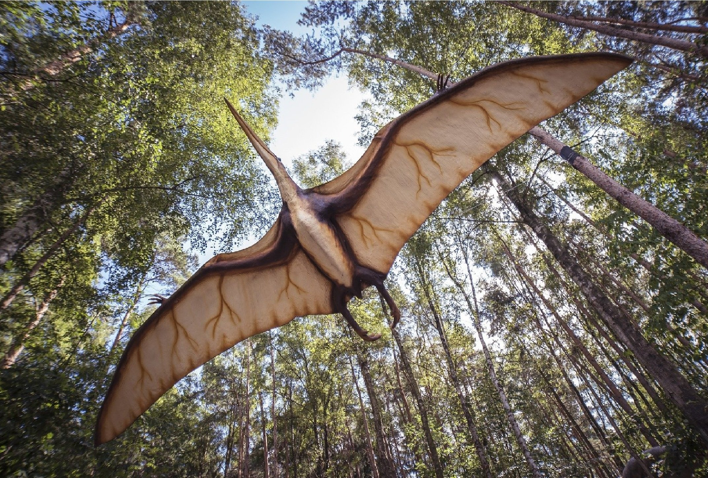

Доволі невеликий птерозавр (розмах крил близько метра), що мав довгі щелепи, головний гребінь і короткий, як і в решти птеродактилоїдів, хвіст.
Розміри птеродактилів сильно варіювали — від дрібних, завбільшки з горобця, до гігантських птеранодонів з розмахом крил до 8 метрів, орнітохейрусів і аждархід (кетцалькоатль, арамбургіана) з розмахом крил до 12 метрів. Селилися біля лагун, біля котрих водилося багато ящіркоподібних. Дрібні живилися комахами, великі — рибою та іншими водними тваринами. Залишки птеродактилів відомі з верхньоюрських і крейдових відкладень Західної Європи, Східної Африки і обох Америк, Австралії, в Росії — Поволжя.
